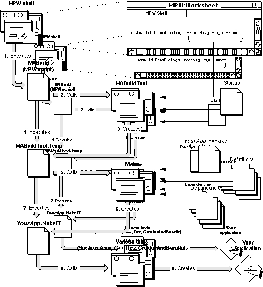

The Architecture of MacApp's Build System
For simple applications, you don't need to know much about MABuild's use of scripts, tools, and shell variables. The MABuild system offers rather sophisticated default behavior. But if you need to explore beyond the default behavior, knowledge of the MABuild system's architecture will become more important.MABuild System Files
This section lists files used by the MacApp build system.
- Note
- A name enclosed in braces
{}indicates a shell variable that will be expanded. One of MacApp's startup files that is described below,1Startup, uses shell variables to define default locations for many MacApp files. For example,{MacApp}indicates the root directory for all MacApp files on your hard disk. It might expand toHD:MacApp:. You can learn more about MPW shell variables in the Macintosh Programmer's Workshop Reference.Startup Files
The MABuild system uses the following files to initialize various MPW shell variables.
{MPW}UserStartupMacAppYou move this file to your MPW shell directory or MPW
Startup Itemsdirectory so that it will be executed when you launch MPW. The first time it is executed, this file asks you to locate your MacApp folder. It then saves the location in a file in the MPW shell directory calledMacApp_Folder. Each time you launch MPW, theUserStartupMacAppfile executes any file in the folder{MacApp}Startup Items:, thus automatically executing certain MacApp startup files that are listed below.{MacApp}Startup Items:1StartupThis startup file sets default values for a number of MacApp-related MPW shell variables, such as the version of MacApp to build and the location of MacApp source code. It also sets aliases for compatibility with earlier releases of MABuild. This file begins with the digit
1so that it will be executed before any other files in the startup folder. If additional startup files need to be executed in a particular order, they should be named or numbered to achieve the correct ordering.The
1Startupfile also executes any scripts in the{MacApp}directory that begin withStartup(the bullet character is created by typing Option-8). This allows you to create personalized startup files that will not be overwritten by a new release of MacApp. For example, you could create a file namedStartupMyStartupthat contains additional variable definitions for your MacApp environment. However, you may prefer to place additional startup files in the{MacApp}Startup Items:folder.{MacApp}Startup Items:Startup%This file sets an MPW shell variable,
MASeparateObjectsPrefix, that is used to add a special character to the names of certain files and directories created during the MABuild process. A different character is used for different versions of MacApp to help identify the version of a library or application you are building.{MacApp}Startup Items:StartupRamDiskUsing a RAM disk can speed the build process significantly. This file looks for a RAM disk with the specified name and sets the shell variable
RAMDiskto that name. It also sets shell variables to tell the build process to look on the RAM disk for certain specified files. For example, if you set the variableCPlusScratchto the name of the RAM disk, the C++ compiler will use the RAM disk for temporary files.The default name for the RAM disk is
RAM Disk:. You can editStartupRamDiskto specify the name of your RAM disk and to set variables indicating which files should go on your RAM disk.Dependencies and Definitions Files
The following files provide definitions and dependencies for specific types of MacApp builds.
{Dependencies}Definitions_68K- This file contains build definitions that are specific to building an application for a 68K-based Macintosh computer.
{Dependencies}Definitions_CFM68K- This file contains build definitions that are specific to building an application that uses CFM-68K (the 68K Macintosh version of the Power Macintosh Code Fragment Manager).
{Dependencies}Definitions_CFront- This file contains build definitions that are specific to MPW C/C++ 68K library support.
{Dependencies}Definitions_Classic- This file contains build definitions that are specific to classic 68K library support.
{Dependencies}Definitions_Common- This file contains build definitions that are common to any kind of build, whether building noncode resources only, building a 68K application, or building a native application for a Power Macintosh computer.
{Dependencies}Definitions_MrC- This file contains build definitions that are specific to MrC compiler support.
{Dependencies}Definitions_MW68K- This file contains build definitions that are specific to Metrowerks CodeWarrior 68K library support.
{Dependencies}Definitions_MWPPC- This file contains build definitions that are specific to Metrowerks CodeWarrior PPC library support (for Power Macintosh).
{Dependencies}Definitions_PPC- This file contains build definitions that are specific to building an application for a Power Macintosh computer.
{Dependencies}Definitions_PPCC- This file contains build definitions that are specific to PPCC compiler support.
{Dependencies}Definitions_SC- This file contains build definitions that are specific to Symantec compiler support.
{Dependencies}Definitions_RSRC- This file contains build definitions that are specific to building an application's noncode resources only.
{Dependencies}Dependencies_68K- This file contains dependency definitions used in building an application for a 68K-based Macintosh computer.
{Dependencies}Dependencies_PPC- This file contains dependency definitions used in building an application for a Power Macintosh computer.
{Dependencies}Dependencies_RSRC- This file contains dependency definitions used in building an application's noncode resources only.
{Dependencies}Fast_Dependencies_68K- This file contains dependency definitions that allow for very efficient 68K compilation using the Metrowerks CodeWarrior compiler.
{Dependencies}Fast_Dependencies_PPC- This file contains dependency definitions that allow for very efficient Power Macintosh compilation using the Metrowerks CodeWarrior compiler.
Makefiles
To help create your application, you create a makefile containing file dependencies and other information. (See "Creating a Makefile," beginning on page 683.) Your makefile is really a partial makefile, also called an MAMakefile (or MacApp Makefile). The MABuild system allows you to specify just the make information necessary for your own files, then combines it with other information to build your application. For convenience, we refer to both kinds of files as makefiles.The following files contain information used in creating makefiles to control the build process.
{MALibraries}MacApp.Lib.MAMake- This is the makefile that contains file dependencies and other information used in building the 68K version of the MacApp library.
{MALibraries}MacApp.lib.xcoff.MAMake- This is the makefile that contains file dependencies and other information used in building the Power Macintosh version of the MacApp library.
{MACPlusExamples}Calc:Calc.MAMake- This is the makefile for the Calc sample application. Other sample programs have similarly named makefiles.
- These makefiles provide good examples of the structure of an makefile. You can modify one of these files for use with your application.
Help File
The following file provides help about the MABuild system.
{MacApp}MacApp.help- This file contains help related to the MABuild system, including the options available for MABuild. You can examine this help file from MPW by typing the following line and pressing the Enter key:
Help -f "{MacApp}"MacApp.Help MABuildMiscellaneous Build Files
The following files provide miscellaneous services to the MABuild system.
{MATools}MABuild- MABuild is actually an MPW script that is launched to start the MABuild process.
{MATools}MABuildTool- This is an MPW tool that runs the build process.
{MALibraries}Defaults.r- This is MacApp's default resource file, which contains resources needed to build your application.
The MABuild Process
The syntax for the MABuild command isMABuild YourApp [-option(s)]The build process is summarized in Figure A-1 on page 671. The flow of control is shown by the numbered gray arrows connecting the icons on the left side of the illustration. Inputs to the process are shown by solid arrows from the icons on the right side of the illustration.
- Note
- The brackets
[]indicate that their contents are optional (the brackets themselves are not part of the actual syntax). For example, in the MABuild syntax line shown above, no options are required, but a target application name must be specified.The process starts when you type in your MPW worksheet an MABuild command line such as the following and press the Enter key:
MABuild YourApp [-options]This is shown in step 1. TheMABuildscript adds the value of theMABuildDefaultsshell variable to the command line and callsMABuildTool(step 2), which parses your command-line options and also uses some shell variable definitions. The output fromMABuildTool--a group of MPWSetcommands and other commands that execute the MPW Make tool and run Make's output--goes to a temporary text file theMABuildscript creates, calledMABuildTool.Temp(step 3).When
MABuildToolhas finished creatingMABuildTool.Temp, it returns to theMABuildscript, which makes sureMABuildTool.Tempwas created and then executes it (step 4).MABuildTool.Tempinitializes the variables specified as options for the current build, and then callsMake(step 5).
Makecreates its own temporary file, called YourApp.MakeIt, which contains the commands that invoke the compiler and other tools necessary to build your program (step 6).Makeis passed several partial makefiles, includingDefinitions_Common,Definitions_68K(Definitions_PPCif you're building a Power Macintosh version of your application),Dependencies_68K(Dependencies_PPCfor a Power Macintosh version), and the application makefile you created (YourApp.MAMake) to construct the file YourApp.MakeIt.Finally, the
MABuildTool.Tempfile executes YourApp.MakeIt(step 7), which runs the specified tools (step 8) and creates your application (step 9). If the build process completes successfully, the resulting build folder contains the YourApp.MakeItfile (for your reference), the object files (for future builds), a symbol file (if you built with debugging symbols), and your application (ready for testing).Figure A-1 The MacApp build process

Introduction to MABuild Options
You don't usually need to be aware of all the behind-the-scenes calling of scripts and tools that goes on with MABuild. However, you should know that MABuild offers about 50 build options. If you don't specify options, default settings are provided.The build system sets these defaults in several ways, and you can modify them in several ways as well. The MABuildTool has some built-in defaults, and it also checks certain global MPW shell variables, which are set in MacApp's
1Startupfile. These variables are described in the section "Inputs You Provide to MABuild," beginning on page 675.If you wish to change the build system's default behavior, you can alter MacApp's
1Startupfile. You can also override the default behavior by specifying any or all of the MABuild options from the MPW command line. Options set on the command line override or extend the default behavior, whether it comes from MABuild's defaults or from shell variables set by MPW or by you.If you prefer to choose your options from an interactive dialog box, there is an MPW Commando interface for MABuild. To use it, you type
- Note
- For some options, such as specifying whether to include symbols, an option is either on or off. In those cases, the command-line option overrides default options. In other cases, such as specifying compiler options, more than one option may be specified. In those cases, command-line options are concatenated onto the defaults from the
{MABuildDefaults}shell variable.
MABuild...in your MPW worksheet and press Enter. The ellipsis character (...) is produced by typing Option-semicolon. To find out more about MPW's Commando interface, consult the Macintosh Programmer's Workshop Reference.